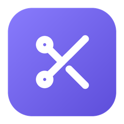

ClipperBOTTerms of Service
These terms apply to your use of ClipperBOT, a desktop application for Windows and macOS ("the app"). By installing or using the app you agree to them. If you don't agree, don't use the app.
What the app does
ClipperBOT watches Twitch streams you choose, detects highlight moments, turns them into short vertical videos and, when you decide to, uploads them to social media accounts you connect (such as TikTok). The app runs on your own computer; see the Privacy Policy for how data is handled.
Your responsibilities
- Rights to the content. Stream footage belongs to the streamers and other rights holders. You are responsible for making sure you have the right to clip and publish any content you post with ClipperBOT, for example the streamer's permission or a clipping program they run, and for crediting creators where required.
- Platform rules. You must follow the terms, community guidelines and developer policies of every platform you use with the app, including Twitch, TikTok, YouTube, Instagram and Facebook.
- What you post. You decide what gets published. Review clips before approving them, and only turn on automatic posting if you accept responsibility for what it publishes.
- Your accounts and keys. Keep your API keys and connected accounts secure. Any costs from third-party services you connect (such as Anthropic API usage for the optional Claude judge) are yours.
- Lawful use. Don't use the app to harass anyone, to publish private information, or for anything illegal.
Third-party services
The app works with services we don't control (Twitch, TikTok, YouTube, Instagram, Facebook, Anthropic, GitHub). Their availability, features and terms can change at any time, which may affect what the app can do.
No warranty
The app is provided "as is", without warranties of any kind, express or implied, including fitness for a particular purpose. We don't guarantee that it will detect every moment, that its scores or captions are accurate, or that it will run without errors.
Limitation of liability
To the fullest extent permitted by law, the developers of ClipperBOT are not liable for any indirect, incidental or consequential damages, or for lost data, accounts, content or revenue, arising from your use of the app or of content you publish with it.
Changes and ending use
We may update these terms; the new version will be posted on this page with a new "Last updated" date. You can stop using the app at any time by uninstalling it and deleting its data folder, and you can revoke its access to your connected accounts in each platform's settings.
Contact
Questions about these terms: github.com/ScuttleK/clipperbot-site/issues.